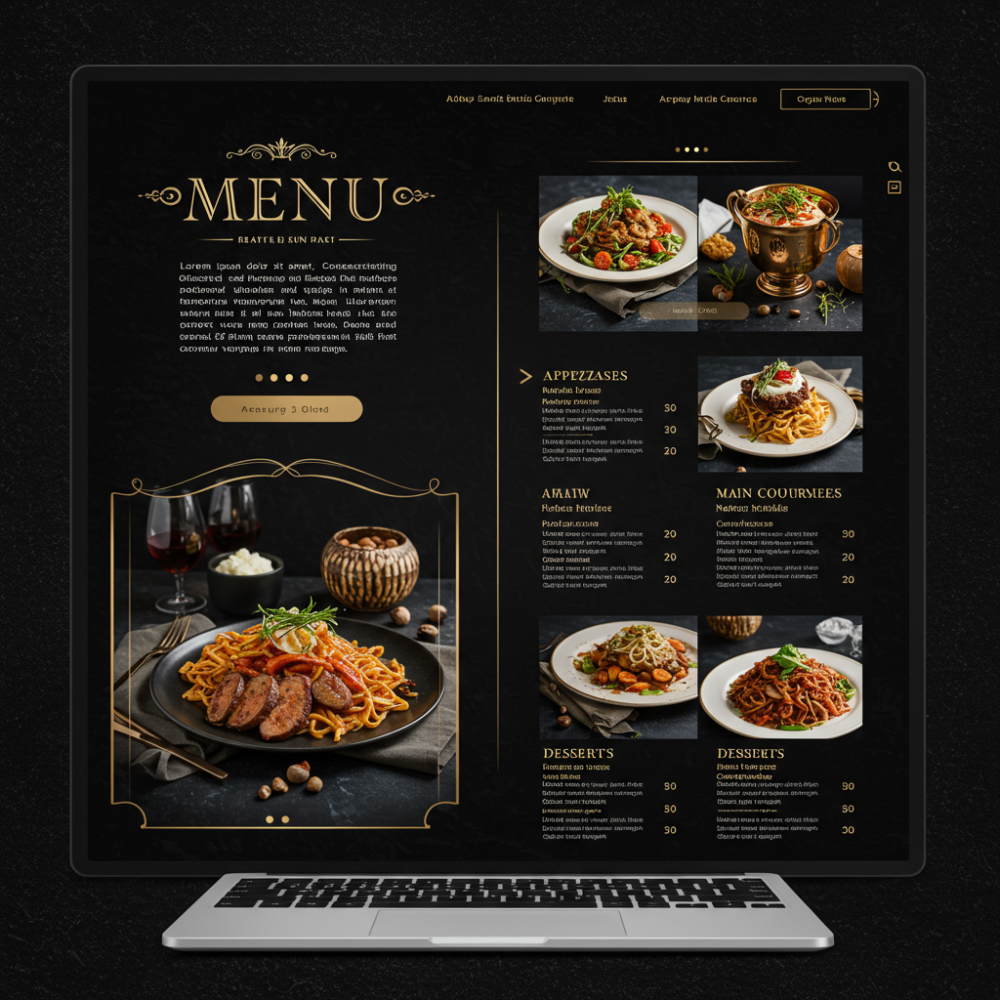
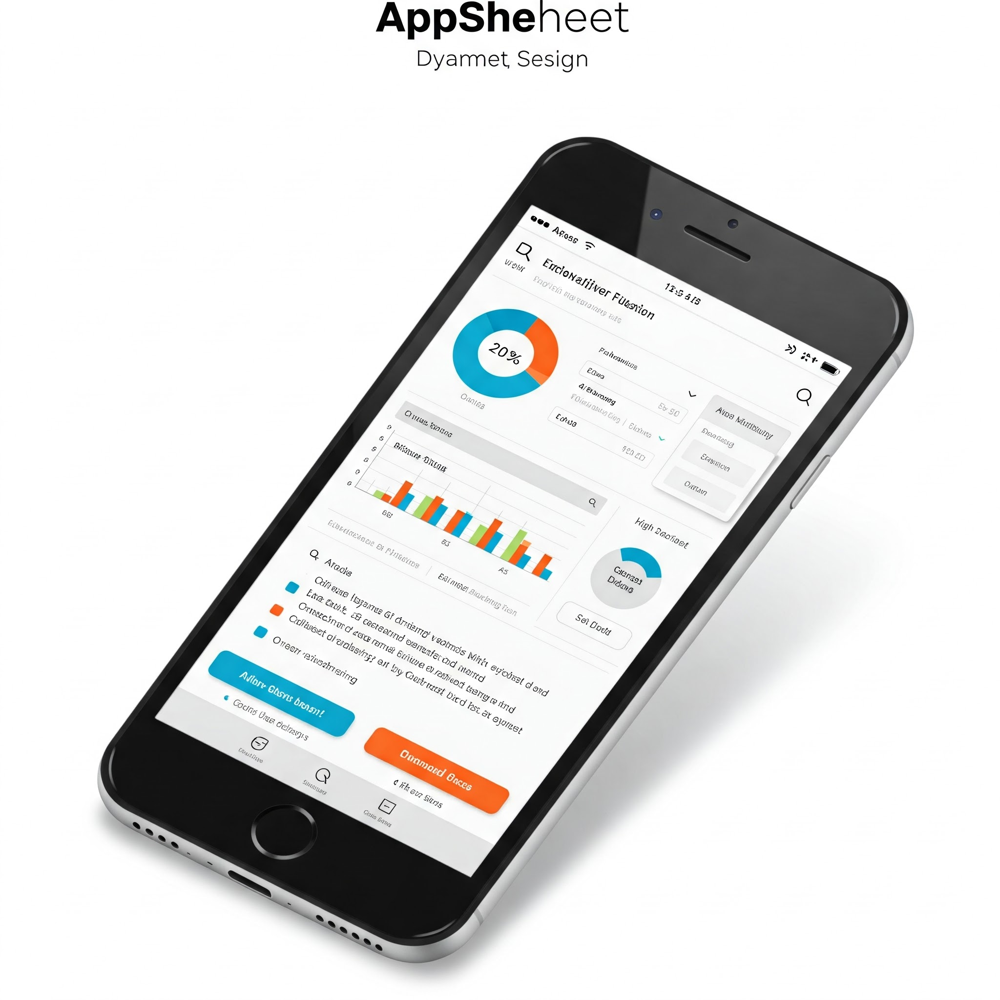
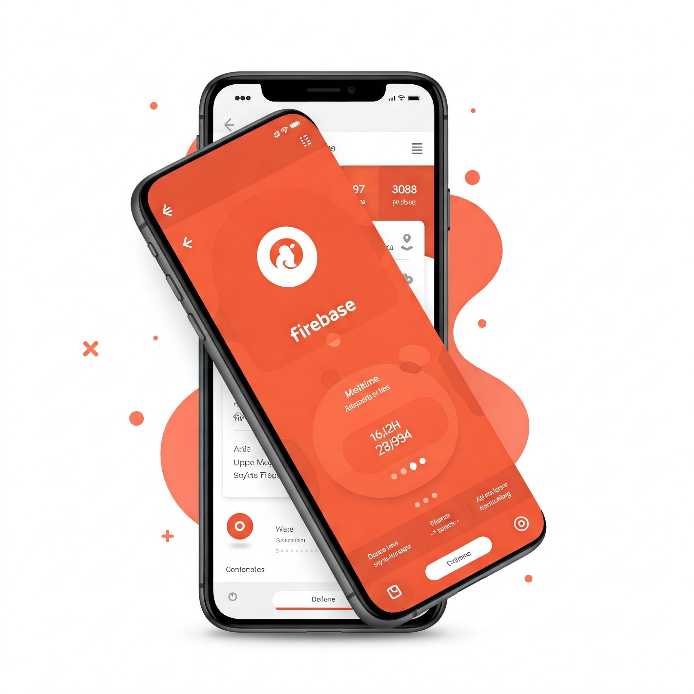

Transforma la experiencia de tus clientes con menús digitales interactivos y visualmente impactantes.
Diseño personalizado con imágenes de alta calidad y animaciones sutiles que resaltan tus platos estrella.
Ejemplos de Menús Digitales

Menú Gourmet Interactivo
Menú con animaciones sutiles que resaltan los platos destacados y opciones de filtrado por categorías.
Menú Digital con QR
Sistema de menú accesible por código QR, con posibilidad de actualización en tiempo real.
📱
Apps Móviles
Desarrollo de aplicaciones móviles personalizadas con AppSheet que se adaptan a tus necesidades operativas.
Desde gestión de almacenes hasta formularios dinámicos con registro fotográfico.
Ejemplos de Apps Móviles

Inventario Móvil
Aplicación para gestión de almacén con escáner de código de barras y registro fotográfico de productos.
Sistema de Pedidos
App para la gestión y seguimiento de pedidos con notificaciones en tiempo real y dashboard de análisis.
🌐
Apps Web
Construyo aplicaciones web escalables y con un diseño impactante gracias a la potencia de Firebase.
Funcionalidades completas y estilos visuales que marcan la diferencia en la experiencia de usuario.
Ejemplos de Apps Web

Control de Almacén
Aplicación web con Firebase para gestión de inventario y control de almacén en tiempo real.
Panel de control para visualización y análisis de datos con gráficos interactivos.
Sistematizaciones (Google & Office)
Automatización de Reportes en Google Sheets
Automatización de procesos con Google Apps Script, conectando datos entre diferentes plataformas y generando reportes personalizados. Optimiza el tiempo y reduce errores en tus operaciones diarias.
Programas en Python
Herramienta de Análisis de Datos con Python
Desarrollo de soluciones para el análisis de grandes volúmenes de datos utilizando Python con librerías como Pandas, NumPy y Matplotlib. Visualización de datos que facilita la toma de decisiones estratégicas.
Blogs y Creación de Contenido
Blogs de Presentación con Integración a Redes Sociales
Desarrollo blogs visualmente atractivos, ideales para presentar proyectos o eventos. Incorporo galerías de fotografías impactantes y los vinculo estratégicamente con tus perfiles en redes sociales para ampliar su alcance.
Blogs Personales para Promoción de Productos
Creo blogs personales diseñados para destacar productos de tiendas en línea. A través de contenido relevante y persuasivo, busco conectar con la audiencia y fomentar las ventas.
Mis Páginas Web
Páginas Estáticas
Promoción a Taxi Móvil
Página web estática creada para promocionar Taxi Móvil.
Soy un profesional versátil con más de 7 años de experiencia en logística, apasionado por la optimización y la innovación. Mi expertise abarca la creación de soluciones digitales integrales, desde el diseño de menús interactivos y el desarrollo de aplicaciones móviles personalizadas con AppSheet, hasta la construcción de aplicaciones web dinámicas con Firebase.
Además, cuento con sólidas habilidades en la sistematización de procedimientos utilizando herramientas de Google y Office, y en la automatización de tareas con Python. Busco constantemente aplicar la tecnología para mejorar la eficiencia y generar valor en diversos ámbitos.
Mi enfoque está en crear soluciones visuales impactantes que atraigan y retengan a los clientes, mejorando la experiencia de usuario y optimizando los procesos de negocio.
Contacto
¡No dudes en ponerte en contacto para llevar tus ideas al siguiente nivel!